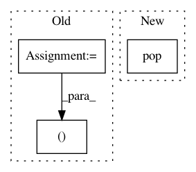

9b9e491bb00be66b732d2f44b3e4375206940e61,auto_ml/predictor.py,Predictor,make_sub_x_and_y_test,#Predictor#Any#Any#,332
Before Change
def make_sub_x_and_y_test(self, X_test, sub_name):
vals_to_ignore = set([None, float("Inf"), "ignore", "nan", "NaN", "Inf", "None", ""])
clean_X_test = []
clean_y = []
for row in X_test:
y_val = row.pop(sub_name, None)
if y_val not in vals_to_ignore and pd.notnull(y_val):
clean_X_test.append(row)
clean_y.append(y_val)
return clean_X_test, clean_y
def _train_subpredictor(self, sub_name, X_subpredictors, sub_model_names=None, sub_ml_analytics=False, sub_compute_power=5):
After Change
def make_sub_x_and_y_test(self, X_test, sub_name):
X_test = X_test[X_test.notnull()]
y = X_test.pop(sub_name)
return X_test, y
def _train_subpredictor(self, sub_name, X_subpredictors, sub_model_names=None, sub_ml_analytics=False, sub_compute_power=5):
In pattern: SUPERPATTERN
Frequency: 3
Non-data size: 3
Instances
Project Name: ClimbsRocks/auto_ml
Commit Name: 9b9e491bb00be66b732d2f44b3e4375206940e61
Time: 2016-10-19
Author: climbsbytes@gmail.com
File Name: auto_ml/predictor.py
Class Name: Predictor
Method Name: make_sub_x_and_y_test
Project Name: keras-team/keras
Commit Name: 1c221934aaeab20ed5b6fa245b33b00a8b557533
Time: 2018-11-29
Author: andhus@kth.se
File Name: tests/keras/backend/backend_test.py
Class Name: TestBackend
Method Name: test_rnn_no_states
Project Name: ClimbsRocks/auto_ml
Commit Name: 33851dea0f6c75ca1e685037393ea7160506b53a
Time: 2016-10-08
Author: climbsbytes@gmail.com
File Name: auto_ml/predictor.py
Class Name: Predictor
Method Name: _prepare_for_training